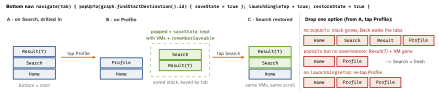

cross-platform · folio
In one line: A NavController owns a back stack of NavBackStackEntry — each entry
is its own Lifecycle, ViewModelStore and SavedState owner — and
NavHost shows the top one. Routes are @Serializable classes (2.8+); every
navigate() is a push plus NavOptions that pop, dedupe, save and restore.
Navigation 3 drops the controller: you own the back stack as a state list.
Download PDF Print view LaTeX source


The model
rememberNavController()+NavHost(nav, startDestination = Home) {…}builds aNavGraph;currentBackStackEntryAsState()drives the bottom bar. Screens get lambdas, not theNavController(testable, previewable).- Type-safe routes (2.8.0, Sep 2024):
@Serializable object/data class, fields = arguments (Bundle-encoded: pass ids; custom types need atypeMap). Read:entry.toRoute<Profile>(), in the VMsavedStateHandle.toRoute<Profile>(). 2.9:KClassoverloads, value classes; 2.10 (Aug 2026): KMP targets, predictive-pop transitions. navigation<Checkout>(startDestination = Cart) {…}= nested graph: a flow with its own start, poppable as a unit (popUpTo<Checkout> { inclusive = true }).
Example
@Serializable object Home
@Serializable data class Profile(val id: String)
@Serializable object Checkout; @Serializable object Cart
NavHost(nav, startDestination = Home) {
composable<Home> { HomeScreen(onUser = { nav.navigate(Profile(it)) }) }
composable<Profile>(deepLinks = listOf(navDeepLink<Profile>(
basePath = "https://example.com/u"))) { ProfileScreen() }
navigation<Checkout>(startDestination = Cart) {
composable<Cart> { entry ->
val flow = remember(entry) { nav.getBackStackEntry<Checkout>() }
val vm: CheckoutVM = hiltViewModel(flow) // shared by the flow
CartScreen(vm, onDone = { nav.navigate(Home) {
popUpTo<Checkout> { inclusive = true } } }) } } }Back-stack operations
popUpTo(X)pops all above X;inclusive = truepops X too (after login).launchSingleTop: no second copy on top.saveState/restoreState= multiple back stacks (2.4+): popped entries keep state + VMs, keyed by the tab.popBackStack()returnsfalseif nothing popped (empty host = blank screen);navigateUp()goes to the parent inside your own task.
Traps
navigate()in the composable body runs on every recomposition — call it from an event or aLaunchedEffect.- Double tap = two pushes: wrap in
dropUnlessResumed { … }. - A whole object in a route: Bundle size, stale copy — pass the id.
Remember: entry = lifecycle + VM store + saved state · pop, single-top, save, restore · Nav 3: the stack is your list.
ViewModel scope & results
- Default
hiltViewModel()= the entry: survives rotation, cleared when popped. Graph-scoped (Example) lives while any of the graph is on the stack. - Result back:
previousBackStackEntry; the caller collects its own?.savedStateHandle?.set("k", id)savedStateHandle.getStateFlow("k", null). Or a shared graph VM — never a callback into a popped screen.
Deep links & App Links
<intent-filter>VIEW+DEFAULT+BROWSABLE+<data>;navDeepLinkmatches. The controller builds a synthetic back stack (start of each parent graph) so Back works; withFLAG_ACTIVITY_NEW_TASKthe task is cleared and rebuilt.- App Links:
autoVerify="true"+/.well-known/assetlinks.json(package + SHA-256 cert). Android 12+: unverified links open the browser.adb shell pm get-app-links <pkg>.
Predictive back
13: opt-in enableOnBackInvokedCallback="true"; 15: system back-to-home / cross-activity animations for opted-in apps; 16 + targetSdk 36: on by default — onBackPressed() / KEYCODE_BACK no longer delivered. Use OnBackPressedCallback, BackHandler, PredictiveBackHandler (a Flow<BackEventCompat> of progress); NavHost animates the pop (2.8+).
Navigation 3 — you own the stack
1.0.0 stable 19 Nov 2025 (1.2.0 Sep 2026), runtime KMP. rememberNavBackStack(Home) — keys @Serializable : NavKey, survives process death; push backStack.add(Profile(id)), pop removeLastOrNull(). NavDisplay(backStack, onBack, entryDecorators, entryProvider { entry<Home> {…} }); per-entry VMs need rememberViewModelStoreNavEntryDecorator() (lifecycle-viewmodel-navigation3). SceneStrategy: several entries at once (list-detail, dialog). Tabs = lists you keep; ≈ SwiftUI NavigationStack(path:).